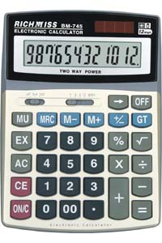

 Concerteza que já reparaste que os números, na maior parte das calculadoras, são formados a partir de 7 "luzes" básicas, que estão ou não acesas conforme o número a mostrar:
.##. .... .##. #..# #..# #..# #..# #..# #..# .##. .##. .... #..# ...# ...# #..# ...# ...# .##. .... .... As 7 luzes Um 4 Um 7
Será que consegues criar um programa que dado um número, o desenhe no ecrã como se fosse desenhado numa calculadora, do modo atrás descrito?
Para consulta, aqui fica o modo como deve ser desenhado cada dígito (nota que no 1, as luzes acesas são as da direita):
.##. .... .##. .##. .... .##. .##. .##. .##. .##. #..# ...# ...# ...# #..# #... #... #..# #..# #..# #..# ...# ...# ...# #..# #... #... #..# #..# #..# .... .... .##. .##. .##. .##. .##. .... .##. .##. #..# ...# #... ...# ...# ...# #..# ...# #..# ...# #..# ...# #... ...# ...# ...# #..# ...# #..# ...# .##. .... .##. .##. .... .##. .##. .... .##. .##.
O input é constituído por uma linha contendo um único número N (1 ≤ N ≤ 1000000), que corresponde ao número a desenhar. Podes ter a certeza que não aparecerão zeros à esquerda.
O output deve conter exactamente 7 linhas, contendo o número no formato atrás descrito. Entre dígitos deve vir exactamente um espaço em branco (mas nota que no final não vem nenhum espaço em branco!)
| Input | Output |
|---|---|
| 518 |
.##. .... .##. #... ...# #..# #... ...# #..# .##. .... .##. ...# ...# #..# ...# ...# #..# .##. .... .##. |
Estruturas de Dados (CC1007)
DCC/FCUP - Faculdade de Ciências da Universidade do Porto